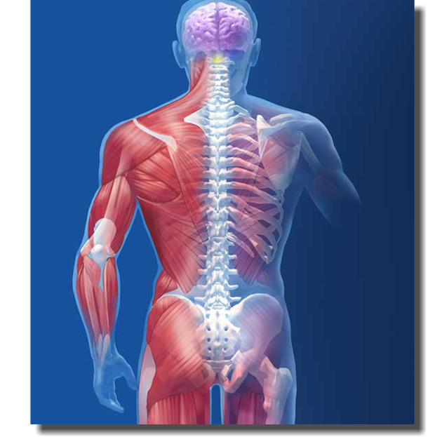

Kas ve İskelet Sistemi
Kas ve iskelet sistemi, vücudun şeklini veren, hareket etmesini sağlayan ve iç organları koruyan sistemdir.
Bu sistem; kemikler, eklemler ve kaslardan oluşur ve birlikte çalışarak vücuda destek sağlar.
Kas ve İskelet Sisteminin Görevleri
- Vücuda şekil vermek
- Hareketi sağlamak
- İç organları korumak
- Mineral depolamak (kalsiyum ve fosfor)
- Kan hücrelerinin üretimine yardımcı olmak
Kas ve İskelet Sisteminin Yapıları
- Kemikler: Vücuda destek ve dayanıklılık sağlar
- Eklemler: Kemiklerin hareket etmesine yardımcı olur
- Kaslar: Kasılıp gevşeyerek hareketi sağlar
Kas ve İskelet Sisteminin Önemi
Kas ve iskelet sistemi olmasaydı vücut hareket edemez, iç organlar korunamaz ve yaşam sürdürülemezdi.
Kısa Özet
Kas ve iskelet sistemi, vücudu ayakta tutan ve hareketi mümkün kılan hayati bir sistemdir.
← Ana Sayfaya Dön